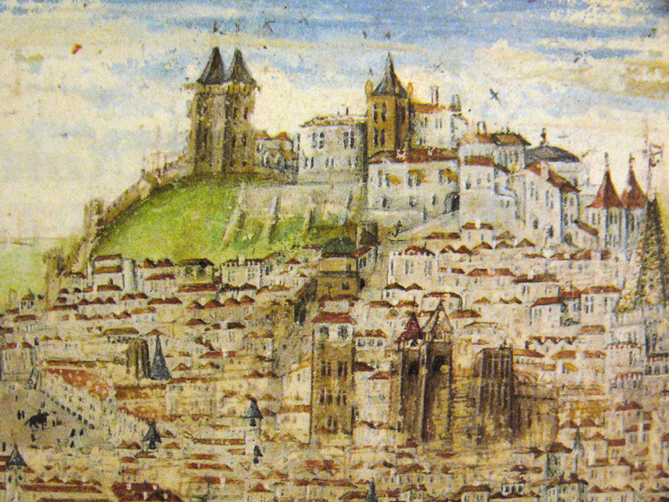
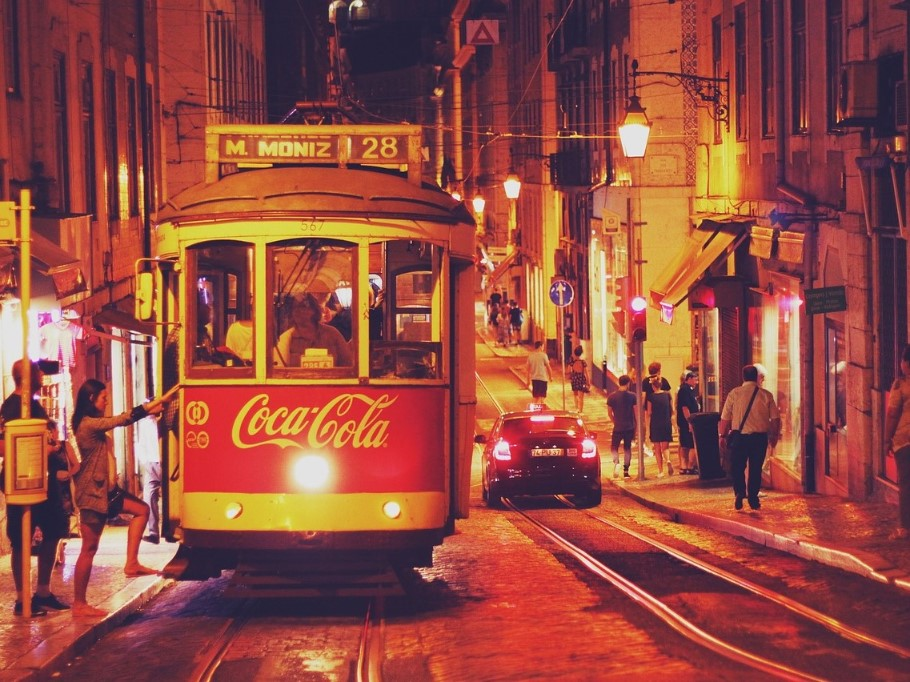
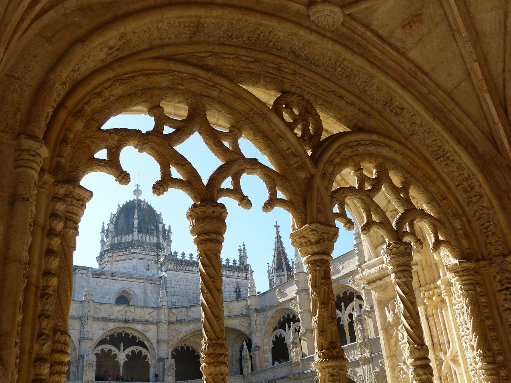

Places
Castelo São Jorge
The winding medieval streets of Lisbon’s most ancient neighbourhood, Alfama, twist up to the city’s Moorish pinnacle. The dusk-orange walls of the ancient castle date back to the ninth-century and lord over the city, being visible from almost every street.


Tram 28
The most charming way to tick off a few sights, the wooden tram 28 rumbles through Lisbon’s prettiest and most historic streets.
Mosteiro dos Jerónimos
This imperious 15th-century Manueline monastery was built to commemorate Vasco da Gama’s “discovery” of India. The main attraction is the delicate Gothic chapel that opens up on to a grand monastery, in which some of Portugal’s greatest historical figures are entombed.
